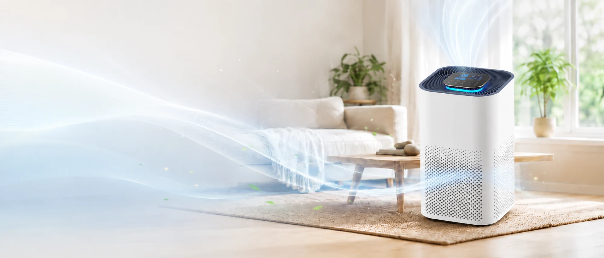

Shared-space concerns
Open offices, meeting rooms and reception areas need products positioned around dust, stale air and general comfort rather than medical promises.
Commercial Air Purifier OEM
Plan workplace HEPA air purifier lines for distributors, wholesalers, Amazon sellers, facility suppliers and private-label brands without overclaiming performance data.
Office buyers often search for air purifiers because shared spaces collect dust, odor, printer-area particles, meeting-room stuffiness and seasonal allergy complaints. For B2B sellers, the opportunity is not only a single machine but a reliable product line with repeat replacement filters and clear procurement documents.
A strong office air purifier offer should connect product form factor, filter structure, airflow positioning and after-sales filter supply with realistic use cases. Avoid unsupported claims. Ask the factory to confirm model-specific CADR data, test reports and certification documents before publishing product listings.

Buyer Pain Points
Open offices, meeting rooms and reception areas need products positioned around dust, stale air and general comfort rather than medical promises.
Distributors need stable SKUs, carton information, replacement filter planning and current documents for their target country.
Office listings should discuss quiet mode and work-friendly positioning, but exact noise values must be confirmed for the selected model.
Amazon sellers and wholesalers need product photos, packaging copy, manuals and FAQ wording that avoid unsupported performance claims.
Start with the target room type, not the product photo. For small offices and meeting rooms, compact or square-body HEPA models may be easier to ship and display online. For larger reception areas or open-plan offices, shortlist higher airflow models and confirm model-specific CADR data before making any room-size statement. If odor is part of the sales angle, discuss activated carbon filter options and replacement filter cost with the factory.
For B2B channels, choose models that can support repeat filter supply, stable packaging dimensions and clear carton planning. For Amazon sellers, confirm plug standard, barcode needs, manual language, packaging artwork and whether the selected model can support product images suitable for listing pages.
Before placing a trial order, review how to verify HEPA filter quality, compare CADR and room-size planning, and prepare your MOQ and wholesale pricing strategy.
No. Meeting rooms, private offices, reception areas and open spaces need different model discussions. Confirm model-specific CADR data and use conditions before making coverage claims.
Yes. Logo, packaging, manual, carton and filter program details can be discussed after model selection and quotation review.
Send target country, sales channel, estimated quantity, room-use scenario, plug standard, certification needs, packaging requirements and whether replacement filters should be included.
Office Air Purifier OEM CTA
Send your target country, buyer channel and quantity plan. LYL Clean Air will recommend suitable models, customization options and quote details.
Contact LYL Clean Air WhatsAppOEM inquiryGet Free Quote
WhatsAppOEM inquiryGet Free Quote